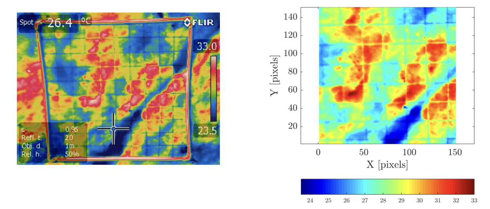

Effects of solar radiation and surface roughness on nominally flat coastal rocks
Modeling thermal refugia for marine life protection

This Master's thesis was attached to a project lead by Dr. Brian Helmuth, seeking to predict areas of thermal refugia during heat waves and extended periods of solar radiation exposure. Working as part of an international multi-disciplinary group and supervised by Dr. Sinan Müftü, I performed research into the impact of surface roughness of rocky coastal surfaces using COMSOL Multiphysics. 3D GIS scans of coastal surfaces with 1 cm2 resolution were converted to ~1 m3 meshes, and subjected to diurnal solar paths to determine the relationship between surface roughness and area of thermal refugia for sessile organisms.